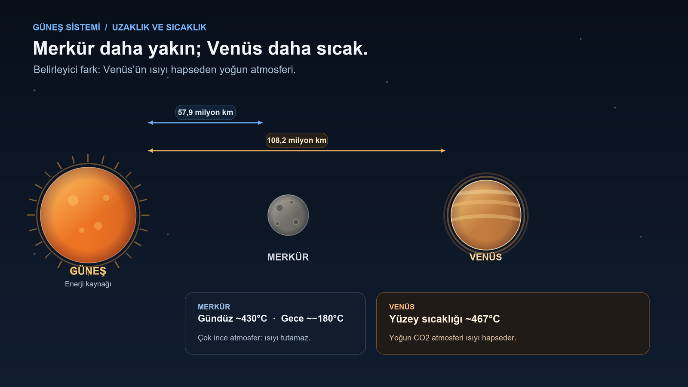

Güneş’e en yakın gezegen Merkür’dür; ancak Güneş Sistemi’nin en sıcak gezegeni Venüs’tür. Bunun nedeni, gezegenlerin yörünge uzaklığının yanı sıra atmosferlerinin Güneş’ten gelen enerjiyi nasıl tuttuğudur.
İki gezegenin Güneş’e uzaklığı
Karşılaştırmayı doğru yapmak için önce uzaklıkları açıkça belirtelim. Gezegenler Güneş’in çevresinde eliptik yörüngelerde dolandığından uzaklıkları yıl boyunca değişir. Aşağıdaki değerler Güneş’e olan ortalama yörünge uzaklıklarıdır:
| Gezegen | Güneş’e ortalama uzaklık | Yaklaşık yüzey sıcaklığı | Atmosfer |
|---|---|---|---|
| Merkür | 57,9 milyon km (0,39 AB) | Gündüz yaklaşık 430°C; gece yaklaşık −180°C | Isıyı tutacak yoğun atmosferi yok |
| Venüs | 108,2 milyon km (0,72 AB) | Yaklaşık 467°C | Çok yoğun, çoğunlukla karbondioksitten oluşan atmosfer |
Dolayısıyla Merkür, Güneş’e Venüs’ten ortalama yaklaşık 50 milyon kilometre daha yakındır. Buna rağmen Venüs’ün yüzeyi daha sıcaktır ve sıcaklığı gezegenin büyük bölümünde çok az değişir.
Venüs’ün atmosferi ısıyı nasıl hapsediyor?
Venüs’ün kalın atmosferinin büyük bölümü karbondioksitten oluşur. Güneş ışığı atmosferden geçip yüzeyi ısıtır; yüzeyin yaydığı ısının bir kısmı ise atmosferdeki sera gazları tarafından tutulur. Bu güçlü sera etkisi, ısının uzaya kaçmasını zorlaştırır ve yüzeyi yaklaşık 467°C düzeyinde tutar.
Merkür’ün ise ısıyı depolayıp gezegenin çevresine dağıtacak yoğun bir atmosferi yoktur. Güneş ışığı alan tarafı çok ısınabilir; gece tarafı hızla soğur. Bu nedenle yalnızca gündüz ölçülen en yüksek sıcaklığına bakmak yanıltıcıdır: Merkür’de sıcaklık farkı çok büyüktür, Venüs’teyse atmosfer ısıyı sürekli olarak hapseder.
Bir gezegenin ne kadar sıcak olduğunu yalnızca Güneş’e uzaklığı değil, atmosferinin ısıyı ne kadar tutabildiği de belirler.
Kısaca: En yakını Merkür, en sıcağı Venüs
Merkür Güneş’e ortalama 57,9 milyon km, Venüs ise 108,2 milyon km uzaklıktadır. Merkür daha yakın olmasına rağmen yoğun atmosferden yoksundur. Venüs’ün karbondioksit ağırlıklı atmosferi güçlü sera etkisi yaratır; bu yüzden Venüs, Güneş Sistemi’nin en sıcak gezegenidir.